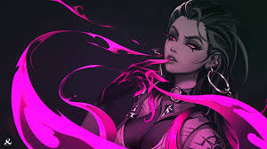

¿Quién es Reyna?
Reyna es una duelista de Valorant originaria de México, conocida por su estilo agresivo y dominante en combate. Se alimenta de las almas de sus enemigos, lo que la convierte en una de las agentes más peligrosas cuando encadena eliminaciones. Su mentalidad es simple: matar o morir… pero casi siempre es lo primero.
¿Qué habilidades tiene Reyna?
Reyna tiene habilidades enfocadas en el combate individual. Puede curarse o volverse intangible tras eliminar enemigos, lo que le permite reposicionarse o seguir atacando sin ser castigada. También puede cegar a sus oponentes con su habilidad "Leer" (eye orb), dejándolos vulnerables. Su definitiva aumenta su velocidad de disparo y le permite encadenar habilidades de forma más letal.